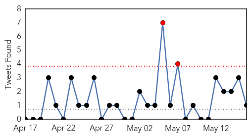
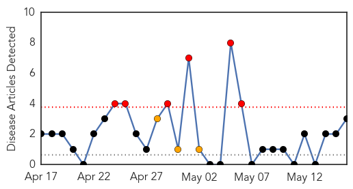
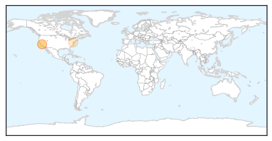
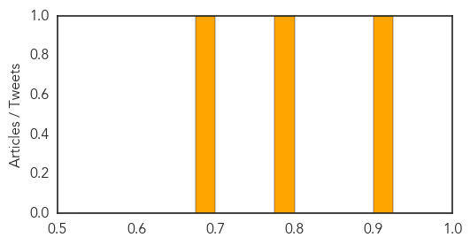

Unknown
30-Day Web Trend
5 alerts, 2 warnings
30-Day Twitter Trend
2 alerts, 0 warnings

Article Locations
Article Confidences
Top Articles:
- 1.000
- Scientists worry about milder cases of MERS
- 1.000
- Saudi MERS toll hits 160
- 1.000
- Singapore checks travellers for MERS as Saudi death toll hits 160
- 1.000
- Silently among us: Scientists worry about milder cases of MERS
- 0.998
- MERS In The United States
- 0.998
- What Exactly Is MERS? 5 Things to Know About the Recent Outbreak
- 0.997
- Is The Government Doing Enough? « CBS Minnesota
- 0.992
- 160 die from MERS
- 0.989
- Florida hospital workers test negative for MERS virus
- 0.980
- Netherlands reports second case of MERS virus
- 0.980
- Netherlands reports second case of MERS virus
- 0.979
- New Drug for Chagas Disease Disappoints in 1st Human Trial
- 0.965
- 8 doctors, 4 nurses, others contract Lassa fever in Ebonyi
- 0.951
- Philippine Embassy issues advisory to check MERS
- 0.917
- Chicago Tribune
- 0.917
- Chicago Tribune
- 0.917
- Chicago Tribune
- 0.917
- Chicago Tribune
- 0.917
- Chicago Tribune
- 0.917
- Chicago Tribune
- 0.917
- Chicago Tribune
- 0.917
- Chicago Tribune
- 0.917
- Chicago Tribune
- 0.917
- Chicago Tribune
- 0.917
- Chicago Tribune
- 0.917
- Chicago Tribune
- 0.917
- Chicago Tribune
- 0.917
- Chicago Tribune
- 0.917
- Chicago Tribune
- 0.910
- The world windows to Thailand
- 0.898
- Utu says “no certainty” as to source of amoebic dysentery
- 0.866
- Former California fire chief suspected of murder is arrested
- 0.866
- Death toll at least 10 in Kenyan blasts
- 0.866
- Turkish ruling party says mine had been inspected 11 times since 2009
- 0.866
- Bus, tanker crash in southeast Mexico, killing 10
- 0.862
- It May Not Be Hump Day, But People Are Kissing Their Camels
- 0.828
- County resident hospitalized for E. coli, possibly linked to undercooked ground beef
- 0.775
- Parirenyatwa’s ICU paralysed
- 0.710
- Minister Ambrose to Take Part in World Health Assembly in Geneva
- 0.705
- Pakistan Moves to Contain Polio Virus after Travel Sanctions
- 0.698
- Legionnaires' disease reported at apartments
- 0.693
- North Cotabato gov’t rations water after diarrhea outbreak
- 0.669
- Pool Chemicals Harm Thousands of Americans Annually
- 0.613
- Plainwell students recovering, school and restaurant thoroughly disinfected after outbreak of illness
- 0.608
- People living with Lyme disease rally for change
- 0.578
- Dr. Nathan Gelder Honors Stroke Awareness Month by Raising Awareness of Stroke and Gum Disease Treatment in Port Townsend
- 0.557
- FDA still baffled by pets treats sickening animals
- 0.555
- Colorado horse tests positive for equine herpes
- 0.550
- Health Workers, Patients Under Attack
- 0.550
- In China, More Irate Patients Violently Attack Doctors over Wrong Diagnoses and Poor Healthcare
Showing top 50 articles...
Top Tweets:
- 0.652
- With today’s new cases, UAE MERS tally is now 51 case as the second country with highest MERS cases after KSA.
Pertussis
30-Day Web Trend
6 alerts, 3 warnings

30-Day Twitter Trend
0 alerts, 0 warnings

Article Locations
Article Confidences
Top Articles:
Top Tweets:
-
No tweets found for May 16, 2014